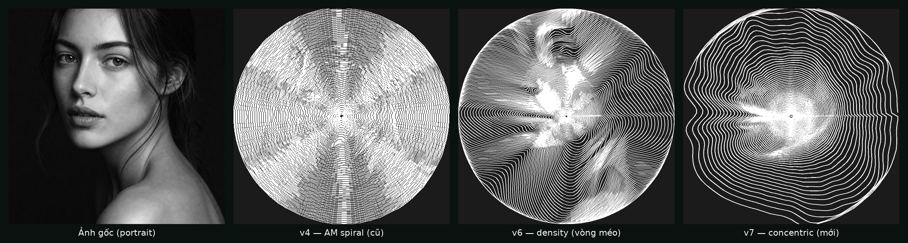

So sánh 4 bản: ảnh gốc · v4 (AM spiral cũ) · v6 (vòng méo — đã bỏ) · v7 (concentric — vòng tròn đồng tâm + mặt hiện rõ bằng mật độ vòng). Bấm player để xem animation nét vẽ + reveal đối chiếu ảnh gốc.
